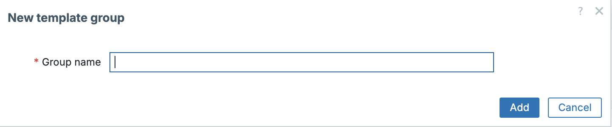
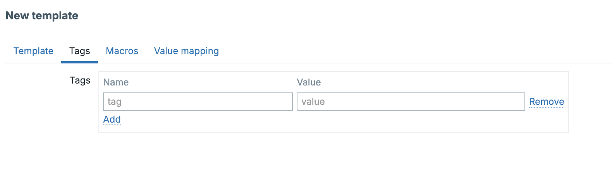
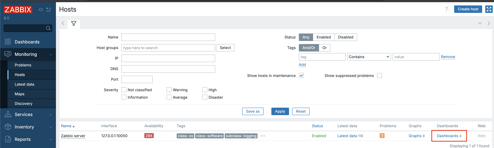
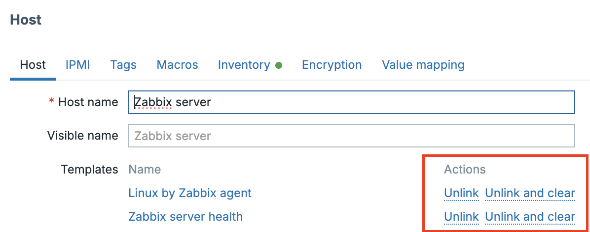
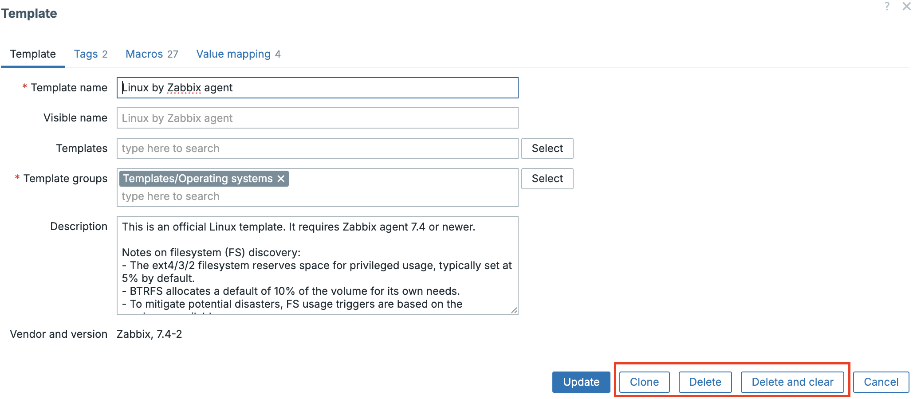
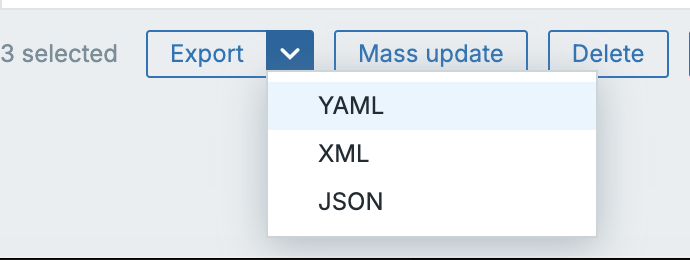
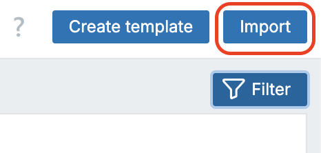

Working with templates
Templates are one of the most fundamental building blocks in Zabbix. They define what and how to monitor, and serve as reusable configuration blueprints that can be applied to any number of hosts. By grouping related items, triggers, graphs, discovery rules, and macros into a single logical entity, templates make it possible to standardize and scale monitoring efficiently.
Zabbix 8.0 emphasizes a monolithic, self contained design. While template linking is still supported for compatibility, the recommended approach is to use standalone templates for simplicity and portability. A deliberate departure from the older inheritance based approach. used in previous versions. This design philosophy makes templates easier to export, share, and maintain, especially when managing multiple environments or distributing monitoring logic across teams.
Fun fact
In earlier releases such as Zabbix 3.0, there were only around 30–40 built-in templates available out of the box. In contrast, Zabbix 8.0 ships with hundreds of official templates and integrations, covering everything from operating systems and databases to cloud platforms and network devices. This dramatic growth highlights how Zabbix has evolved into a full-featured monitoring ecosystem with native support for nearly any technology stack.
Template Fundamentals
A template in Zabbix encapsulates all the elements required to monitor a specific technology or system. This can range from a simple operating system agent to a complex multi-layer application such as PostgreSQL, VMware, or Kubernetes.
Each template can include:
- Items: definitions of data to collect (e.g., system.cpu.load, vfs.fs.size[/,free]).
- Triggers: logical expressions that evaluate collected data to identify problem conditions.
- Graphs: visual representations of collected metrics.
- Discovery Rules: automated mechanisms to detect entities (like filesystems or interfaces) and dynamically create item prototypes.
- Value Maps: mappings that translate raw data into human-readable text.
- Macros: reusable variables that make templates configurable and environment agnostic.
- Tags: metadata used for filtering, correlation, and alert routing.
- Dashboards: predefined visualization layouts attached to the template.
Templates are linked to hosts to apply these monitoring definitions. Once linked, the host immediately inherits all monitoring logic from the template.
The Monolithic Template Model
Before Zabbix 6.x, templates could be built hierarchically, using inheritance between parent and child templates. While powerful, this approach often led to dependency complexity, version mismatches, and export/import challenges.
Starting with Zabbix 6.4 and refined in 7.x, the preferred design is monolithic templates meaning each template is self contained and does not rely on inheritance. This makes templates easier to:
- Export and share as standalone YAML files.
- Version control in Git or CI/CD environments.
- Import without dependency conflicts.
Monolithic templates are also simpler to maintain, as all configuration elements are defined within one object, avoiding the “template chain” problem where one missing dependency breaks the import process.
Template UUIDs
Starting with Zabbix 6.2, every configuration entity, including templates, is assigned a Universally Unique Identifier (UUID). This fundamentally changed how Zabbix tracks and synchronizes configuration objects across different environments.
Purpose of UUIDs
Before UUIDs were introduced, Zabbix relied on template names to identify and match templates during import/export. This created issues when two templates had identical names or when renaming templates between environments.
UUIDs solve this problem by providing a persistent, globally unique reference for each template, independent of its name or internal database ID.
Benefits
- Reliable synchronization: Imports and updates use the UUID, preventing duplication and mismatched merges.
- Conflict prevention: Avoids overwriting templates with the same name.
- Version-control stability: Git-based workflows can track the same object across environments.
- Improved automation: APIs and pipelines can safely address templates by UUID rather than numeric IDs.
Example YAML template:
zabbix_export:
version: '8.0'
templates:
- uuid: a4c1d0f2d7de4a40a8b347afeb9a88df
template: 'Template OS Rocky Linux'
groups:
- name: 'Templates/Operating Systems/Linux'
items:
- uuid: f0c1b836c81d4bba9419dc12bce7e411
name: 'System uptime'
key: 'system.uptime'
type: ZABBIX_AGENT
Behavior and Persistence
The UUID remains constant even if the template is renamed or moved between groups. However, when a template is cloned or copied, Zabbix generates new UUIDs for the template and all of its entities. This ensures the cloned template is treated as a distinct object and does not conflict with the original during import, export, or API synchronization.
What Happens When You Clone a Template
When you clone or copy a template (for example, to customize it), Zabbix creates a completely new object. All nested entities like items, triggers, discovery rules, dashboards, etc. will receive new UUIDs.
This means your cloned template is independent:
- It will not overwrite the original during imports.
- It can coexist safely even if it has a similar name.
- It is ideal for creating customized variants of official templates.
Note
If you manually remove or alter UUIDs in the YAML file, Zabbix treats it as a new object on import.
Best practice
Add a suffix or prefix such as (Custom) to distinguish cloned templates and document their origin in the template notes like: - Origin: Linux by Zabbix agent - Based on UUID: a4c1d0f2d7de4a40a8b347afeb9a88df
Template Groups
Template groups in Zabbix are used for organization and access control targeting.
They provide a logical way to categorize templates (for example, Operating Systems,
Databases, Network Devices), but they do not themselves define access rights.
A template group itself does not carry permissions.
Instead, user groups are granted permissions on template groups.
These permissions determine whether members of a user group can view (read-only)
or modify (read-write) the templates contained within those groups when working
in the frontend.
In other words:
- Template groups: organize and classify templates.
- User groups: hold the permissions that control access to those template groups.
This model provides flexible role based access control (RBAC): administrators can manage access centrally by assigning or revoking permissions for user groups rather than editing individual templates.
If you like to make a new template group then they can be found under Data collection
→ Host groups → Create template group

Permissions and Access Control
In Zabbix 8.0, access to templates is controlled by a combination of user roles
and usergroup permissions.
- Roles define what actions a user can perform globally. Such as viewing problems, acknowledging events, or modifying configuration.
- User groups: define which objects the role can act on by granting
Read-only (RO)orRead-write (RW)permissions to specific object groups (host groups, template groups, map groups, etc.). - Template groups are simply one of those object groups: a scope to which permissions can be applied.
For example, a user role may allow configuration changes, but the user will only be able to modify templates that belong to template groups where their user group has RW access.
This separation provides precise control between what actions are allowed and where they are allowed.
Impact of template permissions
Although template group permissions primarily govern configuration access, they can also influence operational behavior in the frontend. When users view or interact with problems, their ability to take certain actions depends both on their role and their permissions for the underlying host or template.
| Action | Read-only (RO) | Read-write (RW) |
|---|---|---|
| Acknowledge problem | ✅ | ✅ |
| Add comment / update status | ✅ | ✅ |
| Suppress problem | ✅ | ✅ |
| Change problem severity | ❌ | ✅ |
| Manually close problem | ❌ | ✅ |
| Modify trigger severity | ❌ | ✅ |
| Edit or link templates | ❌ | ✅ |
Tip
Read-only users can acknowledge or suppress issues but cannot change severity or manually close problems.
As an example in Zabbix:
Consider two distinct user groups with different roles and permissions:
- Operations (RO): Members can view hosts and problems, acknowledge or suppress issues, but cannot change severity levels or modify triggers.
- Monitoring Admins (RW): Members can edit templates, adjust trigger logic, and manually close problems.
If both groups monitor hosts that use templates from Templates/Applications/Databases:
- Operations: can acknowledge and suppress problems as part of daily triage.
- Monitoring Admins: can modify or tune the underlying template configuration when a systemic issue is detected.
This segregation maintains stability. Operations staff can handle incidents, while admins manage definitions.
Note
Template group permissions control configuration visibility, but operational access (to data and problems) still depends on host group permissions.
Permissions and Roles – How Access Really Works
Zabbix enforces permissions through user groups and roles, not through inheritance between objects. There is no automatic propagation of permissions from template groups to host groups or between templates and the hosts that use them.
- Roles determine what actions users may perform (view, edit, acknowledge, configure, etc.).
- User groups determine where those actions may occur by assigning RO/RW/Deny rights on object groups.
- Template groups and host groups are independent targets. A user with RW access to a host group does not automatically gain rights to the related template group, and vice versa.
This clear separation ensures operational access (hosts) and configuration access (templates) remain distinct, preventing unintended modifications.
Note
Roles (user, admin and super admin) define what you can do. Usergroup permissions define where you can do it.
Best Practices for Permissions
- Separate operational and design access: Grant RO rights to operations teams for monitoring, and RW rights to administrators maintaining templates.
- Align permissions logically: If a user group manages database hosts, grant
them RW access to both the relevant host groups and the corresponding
Templates/Databasesgroup. - Review permissions regularly: Periodically audit usergroup assignments to ensure only authorized teams have configuration privileges.
- Use clear naming conventions for groups: Distinguish functional scopes (Templates/OS/Linux) from organizational ones (Templates/Customers/Prod). This improves clarity when assigning permissions in large environments.
Template Subgroups
Zabbix 3.2 introduced nested template groups (subgroups), enabling a hierarchical structure similar to host groups. Subgroups allow administrators to build organized, multi-level collections of templates, which improves navigation and permission granularity.
Subgroups are created in Zabbix by adding a / in the group names. For example if we
want to create a group Databases as a subgroup of Templates then we only need
to create the new group like this: Templates/Databases. However it's
recommended to create Templates first.
Example hierarchy:
Templates
├── Operating Systems
│ ├── Linux
│ ├── Windows
│ └── Network Appliances
└── Applications
├── Databases
│ ├── PostgreSQL
│ ├── MySQL
│ └── Oracle
└── Web Servers
- Hierarchy for organization and permissions only: Subgroups do not change how templates link to hosts; they are purely structural.
- Automatic downward inheritance: If a user group has RW or RO access to a parent template group, that access automatically extends to all its existing subgroups. You can still assign explicit permissions on individual subgroups to override inherited rights.
- Parent-creation edge case: When you create a new parent group for an already existing subgroup (for example, creating Applications when Applications/Databases already exists), no permissions are automatically assigned to the new parent. Administrators must manually grant permissions on the parent group if required.
- Search and filtering benefits: The hierarchical view makes it easier to locate and manage templates in large environments.
- Consistency with host groups: Subgroup behavior and inheritance are identical for host groups and template groups, providing a uniform organizational model.
Tip
Use top-level groups for broad classifications (e.g., Templates/Applications) and subgroups for vendor or technology specialization. Assign RW rights at the top level for global administrators, and finer-grained access on subgroups for specialized teams.
Tags
Tags are metadata elements used throughout Zabbix for event classification, filtering, correlation, and alert routing. They attach semantic meaning to triggers, items, or templates, helping to describe what the metric or event represents.
Data collection → Templates → Template → Tags

Purpose of Tags
- Event correlation: tags are used by the event correlation engine to match or suppress related problems.
- Alerting and automation: tags appear in actions, allowing conditional notifications or escalations.
- Service mapping: tags link triggers and events to defined business services.
- Filtering: dashboards, reports, and API queries can filter by tag values.
Examples
For a PostgreSQL database template:
For a network device template:
Some good practices to consider
- Use consistent naming for tag keys across templates (e.g., service, component, role).
- Avoid over tagging; focus on attributes useful for filtering or alerting.
- Use lower case, underscore separated keys for uniformity.
Tag Inheritance and Merging Behavior
When templates are linked to hosts and hosts or items already define their own tags — Zabbix merges all tag sources into a single event level tag set. Understanding this inheritance order is crucial for predictable alerting and correlation.
flowchart TB
%% --- TEMPLATED ENTITIES PATH (vertical) ---
subgraph TEMPLATED["Templated entities"]
direction TB
TPL["Template tags:
service=database
component=backend"]
H_TPL["Host tags (applied to templated entities):
region=europe
env=prod"]
TPL_TRIG["Template trigger tags:
severity=high"]
TPL_ITEM["Template item tags:
component=replication"]
EV1["Event (templated trigger)
Merged tags:
service=database
component=backend
component=replication
severity=high
region=europe
env=prod"]
TPL --> H_TPL --> TPL_TRIG --> TPL_ITEM --> EV1
end
%% --- LOCAL ENTITIES PATH (vertical) ---
subgraph LOCAL["Local entities (on Host)"]
direction TB
H_LOC["Host tags (local entities):
site=be-brussels
team=ops"]
LOC_TRIG["Local trigger tags:
class=local"]
LOC_ITEM["Local item tags:
sensor=temp"]
EV2["Event (local trigger)
Merged tags:
site=be-brussels
team=ops
class=local
sensor=temp"]
H_LOC --> LOC_TRIG --> LOC_ITEM --> EV2
end
Interpretation:
Zabbix merges tags from top to bottom. Template level tags are the most general, while item level tags are the most specific. All resulting tags flow into the generated event.
Inheritance Order explained:
- Item-level tags → applied directly to collected metrics (most specific).
- Trigger-level tags → apply to problems generated by the trigger.
- Host-level tags → inherited only by items and triggers that originate from linked templates on that host (they do not apply automatically to locally defined host items/triggers).
- Template-level tags → base tags from all linked templates.
The final event inherits all tags from these levels, with duplicates automatically removed.
Conflict Handling
- If the same tag key appears multiple times with different values, all values are kept.
- Duplicate key–value pairs are deduplicated.
- Tags are additive, not overridden. Unlinking or clearing a template removes only that template’s tags from future events.
Example :
| Source | Tag Key | Tag Value |
|---|---|---|
| Linux by Zabbix agent | service |
os |
| PostgreSQL by Zabbix agent 2 | service |
database |
| Host | region |
europe |
| Item | component |
replication |
The resulting event tags will be:
Some good practices when tagging
- Keep template level tags generic (e.g., service: database).
- Use host level tags for environmental context (e.g., region: europe, customer: acme).
- Apply item/trigger-level tags for event specificity (component: disk, component: replication).
- Regularly audit merged event tags under Monitoring → Problems → Tags to verify inheritance behavior.
Template macros
Macros are variables that make templates flexible and reusable. They define thresholds, credentials, or paths that can be adjusted per environment without editing template logic.
Data collection → Templates → Template → Macros

Example:
Macros can be defined globally, at the template level, host-group level, or host level, and can be overridden according to a strict precedence order.
Macro Precedence and Conflict Resolution
When multiple templates linked to the same host define the same macro, Zabbix resolves conflicts by comparing template IDs.
:warning: The macro from the template with the lowest template ID takes precedence.
Example:
| Template Name | Template ID | Macro | Value |
|---|---|---|---|
| Template OS Linux | 10101 | {$CPU_UTIL_MAX} |
85 |
| Template App PostgreSQL | 10115 | {$CPU_UTIL_MAX} |
90 |
→ The oldest template (lowest ID) wins → {$CPU_UTIL_MAX}=85.
Precedence Hierarchy:
| Level | Description | Notes |
|---|---|---|
| 1. Host macro | Defined on host | Highest priority |
| 2. Template macro | Lowest template ID wins if duplicate | Applies to linked templates |
| 3. Global macro | Default fallback | Lowest priority |
Some good practices
- Keep macro names unique within template families.
- Use host-level overrides for environment-specific adjustments.
- Document shared macros to prevent conflicts.
Value Maps
Value maps convert raw numeric or coded values into meaningful, human readable text. They make dashboards, triggers, and data views more intuitive. For example, turning SNMP status codes like 1, 2, 3 into Up, Down, Unknown.
Data collection → Templates → Template → Value maps

Scope and Availability
Value maps exist in two distinct scopes in Zabbix 8:
| Scope | Created In | Can Be Used By | Shared With |
|---|---|---|---|
| Template-level value map | Inside a template definition | Items belonging to that same template | ❌ Not accessible from other templates or hosts |
| Host-level value map | Directly on a specific host | Items defined directly on that host | ❌ Not accessible by other hosts or templates |
Note
There is no such thing as a global value map. Each map is strictly local to its parent template or host. To reuse a map elsewhere, you must export/import or recreate it under the new object.
Types of Mappings
A value map can contain one or more mapping rules, which determine how an incoming raw value is translated.
Zabbix 8 supports the following mapping rule types:
| Mapping Type | Description | Example |
|---|---|---|
| Exact value | One-to-one translation of a specific value | 1 → Up, 2 → Down, 3 → Unknown |
| Range mapping | Applies to any value within a range | 0–49 → Normal, 50–79 → Warning, 80–100 → Critical |
| Pattern (regex) | Matches values by regular expression | ^ERR.* → Error detected |
| Default value | Fallback if no other rule matches | * → Undefined |
Mappings are evaluated from top to bottom — the first match wins.
Example: Template-Level Value Map
In a custom Template Network Switch, you might define:
| Raw value | Mapped text |
|---|---|
| 1 | Interface Up |
| 2 | Interface Down |
| 3 | Interface Testing |
| * | Unknown State |
Items inside the template that return SNMP interface status (ifOperStatus) can reference this value map directly.
Example: Host-Level Value Map
For a specific host, e.g. Switch A, you might define:
| Raw value | Mapped text |
|---|---|
| 1 | Operational |
| 2 | Non-operational |
Only items defined directly on Switch A (not inherited from a template) can use this map. If the same host a template is applied, that host will use the template’s value map instead of the host-level one for items from the template.
Some good practices for value maps
- Keep template level value maps technology specific (e.g. SNMP interface, SMART disk status).
- Define host level maps only when customization is necessary for that device.
- Maintain consistent naming conventions (Interface Status, Disk Health) across templates to simplify export/import.
- If multiple templates require the same mapping logic, simply define identical value maps within each template. Zabbix does not provide cross-template sharing, so each template must contain its own copy of the map definition.
Template Dashboards
Template dashboards allow you to attach pre-designed visual dashboards directly to a template. When the template is linked to a host, Zabbix automatically creates a host-specific dashboard instance based on that template. This makes it possible to provide consistent visualizations for every host or application without manually building dashboards for each one.
Where to Find Template Dashboards
Template dashboards can be accessed and edited under:
Data collection → Templates → [select template] → Dashboards tab
Each template may include one or more dashboards. When a host is linked to a template containing a dashboard, that dashboard appears automatically under:
Monitoring → Hosts → [select host] → Dashboards tab
This dashboard is generated dynamically for the selected host, showing metrics and graphs populated with that host’s data.
Purpose and Use Cases
Template dashboards are most useful for application-level or host-specific visualization. They provide a structured, ready-to-use view tailored to the technology being monitored.
Typical Use Cases:
- Application dashboards:
- A Template App PostgreSQL can include charts for query throughput, buffer cache hit ratio, replication delay, and trigger problem widgets.
- When linked, each database instance automatically gains its own PostgreSQL performance dashboard.
- Operating system dashboards:
- Template OS Linux may display CPU load, memory utilization, filesystem usage, and system uptime widgets.
- Network device dashboards:
- Template Net Cisco SNMP could show interface bandwidth, packet errors, and uptime.
These dashboards ensure consistent presentation and help operators quickly understand the health of any host using that template.
Dashboard Components
Template dashboards support the same widget types as user dashboards, including:
| Category | Widget Examples | Purpose |
|---|---|---|
| Data visualization | Graphs, time series, top N | Show trends and metric comparisons |
| Status views | Problems, Item values, SLA widgets | Real-time status per host/application |
| Service overview | Business service state, SLA | Map triggers to service impact |
| Layout elements | Text, maps, URL embeds | Add context, documentation, or external views |
Each widget automatically substitutes host-specific data when rendered under
Monitoring → Hosts → Dashboards. No manual host configuration is required.

Some Good Practices
- Keep dashboards concise: Focus on the key health indicators of that application or system.
- Leverage macros: Use template macros (e.g., {$PG.DBNAME}) inside widgets to make them adaptive across instances.
- Group widgets logically: Use grid layout — metrics at top, triggers below, historical trends on the side.
- Document context: Include a Text widget describing what each graph shows or what thresholds mean.
- Use template dashboards: for “per-instance” visibility, and user dashboards for multi-host or environment-wide overviews.
Example: Template App PostgreSQL
A typical Template App PostgreSQL dashboard might include:
| Widget | Description |
|---|---|
| Graph | PostgreSQL transactions per second |
| Graph | Replication lag in seconds |
| Item Value | Cache hit ratio (pg.stat.cache.hit) |
| Problem Widget | Current trigger status for this instance |
| Text Widget | Notes: tuning guide, connection info, etc. |
Once the template is linked to hosts db01, db02, and db03, Zabbix automatically renders three dashboards, each showing real metrics for its respective instance.
Advantages of Template Dashboards
- Consistency: every host or application gets the same visualization standard.
- Zero manual setup: dashboards appear automatically on linking.
- Version control: dashboards are stored inside templates and follow the same YAML export/import flow.
- Maintainability: when you update a template dashboard, all hosts using that template receive the new version automatically.
- Scalability: ideal for large environments — one dashboard design scales to hundreds of hosts.
Template Management Operations
Template management in Zabbix 8.0 offers multiple actions for maintaining, cloning, cleaning, and synchronizing templates efficiently.
These operations are accessible under:
Data collection → Hosts on the host itself.

Unlink vs. Unlink and Clear
-
Unlink: Detaches the template from a host but retains all inherited items, triggers, and discovery rules on the host.
-
Unlink and Clear: Removes the template and deletes all entities that originated from it (items, triggers, graphs, and discoveries).
Use Unlink to preserve historical data, and Unlink and Clear when you need to remove the monitoring logic completely.
Clone
The clone button creates an exact copy of an existing template, including all
items, triggers, dashboards, macros, and value maps. Every entity within the clone
receives a new UUID, ensuring full independence from the original.
Data collection → Templates on the template itself.

Example:
Template OS Linux → Clone → Template OS Rocky Linux (Custom)
Tip
Always rename cloned templates immediately to reflect their intended purpose or environment as we discussed before.
Delete vs. Delete and Clear
- Delete: Removes the template definition but leaves all items and triggers (now orphaned) on linked hosts.
- Delete and Clear: Deletes both the template and any entities created on linked hosts.
When performing cleanup or migration, Delete and Clear ensures no residual items remain in configuration cache.
Warning
Deletes happen immediately so there is no undo. Also deletes are performed on the database immediately so a large scale delete could have a serious performance impact.
Mass Update of Templates
Zabbix 8 provides a Mass update feature to modify multiple templates simultaneously. This is available via:
Data collection → Templates → Mass update
It’s particularly useful for enforcing consistent macro values, tags, or template group structures across many templates.
| Category | Examples of Updatable Fields |
|---|---|
| General | Template groups, name, description, tags |
| Macros | Add, update, or remove template-level macros |
| Discovery rules | Adjust update intervals or filter expressions |
| Dashboards | Replace or refresh template dashboards |
| Permissions | Move templates between groups (changes RBAC context) |
Behavior and Cautions
- Only the properties you select are overwritten.
- Existing macros or tags with identical names are replaced.
- Changes apply immediately; no rollback is available.
- When moving templates to a different group, verify that related user groups have the proper permissions on that target group.
Some Good Practices
- Use mass update for homogeneous template sets (for example, all OS templates or all network device templates).
- For larger or version-controlled environments, rely on YAML export/import through Git or CI/CD to ensure traceability and change control.
- Always test mass updates on a staging instance before production rollout.
Importing and Exporting Templates
Templates can be imported or exported in both YAML, JSON and XML formats, although YAML is strongly preferred for readability and version control. It is also the standard now in Zabbix.
Exporting
Navigate to Data collection → Templates → Select Your Template(s) → Export, then select YAML.

A typical export looks like:
zabbix_export:
version: '8.0'
templates:
- uuid: a4c1d0f2d7de4a40a8b347afeb9a88df
template: 'Template OS Rocky Linux'
groups:
- name: 'Templates/Operating Systems/Linux'
macros:
- macro: '{$CPU_UTIL_MAX}'
value: '90'
items:
- name: 'System uptime'
key: 'system.uptime'
type: ZABBIX_AGENT
Importing Templates
The import process in Zabbix 8.0 is intelligent — it compares UUIDs, detects differences, and optionally merges or removes entities. You can import templates via:
Data collection → Templates → Import
The button is on the upper right side of your window.

Zabbix supports both YAML JSON andXML`, though YAML is preferred due to its
readability and UUID retention.
Import Options and Their Effects
When importing a template, the import dialog presents several options that determine how conflicts and differences are handled:
| Option | Description | Behavior |
|---|---|---|
| Create new | Import entities that do not exist yet | New templates and their entities are created |
| Update existing | Update entities that already exist based on matching UUIDs | Existing templates are modified to match the import file |
| Delete missing | Remove entities that exist in Zabbix but not in the import file | Entities absent from the import are deleted |
| Replace existing template | Forcefully overwrite all existing definitions | Full replacement, including dashboards and discovery rules |
UUID-Based Matching
Starting with Zabbix 6.2, template imports rely primarily on UUIDs, not names, for matching.
- If the UUID exists, Zabbix updates that object — even if the name differs.
- If no UUID matches, Zabbix treats the object as new and creates it.
- If an object shares the same name but has a different UUID, it is treated as a different entity — no merge occurs.
Tip
When re-importing from version-controlled YAML, always keep original UUIDs intact. Editing or regenerating them will cause duplicates rather than updates.
Diff Visualization
Before confirming an import, Zabbix displays a visual diff screen showing what will change. This interface uses color coding to illustrate modifications at a granular level:
| Color | Meaning |
|---|---|
| 🟩 Green | Elements that will be added or new attribute values |
| 🟥 Red | Elements that will be removed or replaced |
Zabbix compares entities by UUID and lists each difference per category, items, triggers, graphs, macros, value maps, discovery rules, and dashboards. Modified objects show their old values in red and new values in green, providing a clear preview of all pending changes.
“Update Existing” Behavior
When Update existing is enabled:
- Entities with matching UUIDs are updated.
- Entities not in the import remain unchanged unless Delete missing is also checked.
- Template-level fields (name, groups, description, macros, dashboards) are replaced by those from the import.
This mode is ideal for incremental updates or synchronization with a Git-tracked source.
“Delete Missing” Behavior
With Delete missing enabled, Zabbix removes any element present in the database but absent in the import file:
- Items, triggers, discovery rules, graphs, dashboards, and value maps
- Orphaned macros and outdated entities
Warning
This action is destructive. It permanently removes definitions and historical associations. Use only when performing full synchronization from version-controlled sources or replacing obsolete templates.
When both Update existing and Delete missing are checked, the import performs a full sync. The resulting template will exactly match the import file.
Error Handling
Zabbix validates all entities before applying the import. If inconsistencies are found, the import halts and reports detailed errors, such as:
- Missing referenced value maps or linked templates
- Invalid macro names or syntax
- Circular template linkage
- Version mismatches between export and server
The error list shows affected entity names, allowing quick correction and re-import.
Safe Import Workflow
For production grade environments:
- Export first: always back up current templates.
- Validate syntax: use yamllint or JSON validators.
- yamllint template.yaml
- jq empty template.json
- Preview diff: check additions (green) and deletions (red).
- Test in staging: confirm behavior before production import.
- Promote via automation: use the Zabbix API (configuration.import) for reproducible CI/CD deployments.
???+ tip
Automating template synchronization via API and Git ensures identical configurations
across multiple Zabbix servers or environments.
Conclusion
Templates in Zabbix 8.0 are now fully self-contained, UUID-tracked, and automation ready. With improved import/export handling, color-coded diffs, and fine-grained RBAC, they deliver both control and scalability.
By following some good practices, cloning instead of editing built-ins, organizing
templates by group and tag, tuning intervals, maintaining YAML or JSON in Git,
and verifying diffs before import, administrators achieve consistent, predictable
monitoring deployments.
Templates are no longer mere configuration helpers; they are core assets in a modern observability strategy, enabling reproducible, automated, and standards driven monitoring across diverse infrastructures.
Questions
- What are the main configuration elements a Zabbix template can contain, and how do they contribute to standardizing monitoring?
- Explain what happens to UUIDs when a template is cloned.
- Why is it important to preserve UUIDs when managing templates through YAML or Git?
- Describe how tags are inherited when a template is applied to a host.
- Which tags take precedence if both the host and the template define the same key?
- Why can't a template-level value map be used by local host items?
Useful URLs
- https://www.zabbix.com/documentation/current/en/manual/config/templates
- https://www.zabbix.com/documentation/current/en/manual/config/items/mapping
- https://www.zabbix.com/documentation/current/en/manual/config/templates/template
- https://www.zabbix.com/documentation/current/en/manual/xml_export_import
- https://git.zabbix.com/repos?visibility=public
- https://jsonpathfinder.com/
- https://www.yamllint.com/